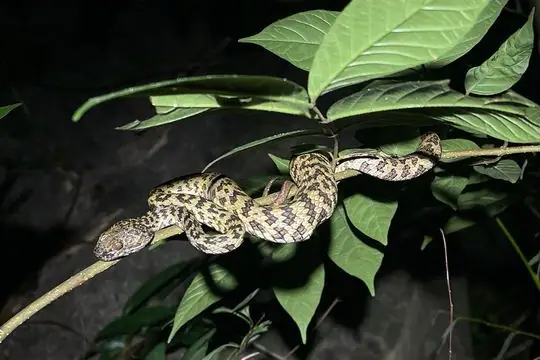

Snakes around Rạch Giá
Kiên Giang, Vietnam · 10.01°N, 105.08°E
Rạch Giá is a city in Kiên Giang, Vietnam. 8 snake species are recorded in Kiên Giang in SnakeList.
- 8species
- 3venomous
- 5non-venomous
- 3families
- 1found only here
These are the snakes of Kiên Giang, not of Rạch Giá itself. SnakeList records snakes by state or province, not by city, so this page lists the 8 species recorded anywhere in Kiên Giang, the state or province Rạch Giá is in (worked out from the city’s map position). Many of them may not live in or near the city.
Most widely recorded
The species here that have research-grade iNaturalist records in the most places across their whole range - not just in Kiên Giang. That shows how often people have photographed them, not how many live here.
 Asian Vine SnakeAhaetulla prasina
Asian Vine SnakeAhaetulla prasina Indo-Chinese Rat SnakePtyas korros
Indo-Chinese Rat SnakePtyas korros Common Mock ViperPsammodynastes pulverulentus
Common Mock ViperPsammodynastes pulverulentus Radiated RatsnakeCoelognathus radiatus
Radiated RatsnakeCoelognathus radiatus Fasciolated Kukri SnakeOligodon fasciolatus
Fasciolated Kukri SnakeOligodon fasciolatus Green Cat SnakeBoiga cyanea
Green Cat SnakeBoiga cyanea Cardamom Mountains Green PitviperTrimeresurus cardamomensis
Cardamom Mountains Green PitviperTrimeresurus cardamomensis
Hon Son Pit ViperTrimeresurus honsonensis
Venomous and non-venomous
Venomous: 3Non-venomous: 5
2 are listed by SnakeList as dangerous to people: Cardamom Mountains Green Pitviper Trimeresurus cardamomensis, Hon Son Pit Viper Trimeresurus honsonensis.
The other venomous ones have mild venom: no serious bites to people are documented for them.
Snake families
Found only here
Recorded in no other state or province or country in SnakeList’s data. That may mean it lives only here, but it can also mean it has not been recorded elsewhere yet.
- Hon Son Pit Viper Trimeresurus honsonensis
Habitats (rough estimate)
How many of its living snakes have each kind of habitat in SnakeList’s estimate. That estimate comes from every country, state and province where each snake is recorded - not from a survey of Kiên Giang, and not checked species by species.
Who described them
The scientists who first described its most widely recorded snakes, and when.
- Asian Vine Snake Ahaetulla prasina -
- Indo-Chinese Rat Snake Ptyas korros -
- Common Mock Viper Psammodynastes pulverulentus -
- Radiated Ratsnake Coelognathus radiatus -
- Fasciolated Kukri Snake Oligodon fasciolatus -
- Green Cat Snake Boiga cyanea -
- Cardamom Mountains Green Pitviper Trimeresurus cardamomensis -
- Hon Son Pit Viper Trimeresurus honsonensis -
Names and dates come from SnakeList’s reviewed species accounts; the others are looked up on Wikidata (CC0) when this page opens.
Nearby cities
The closest cities in SnakeList’s city list, as the crow flies.
- Cần Thơ 77 km · Vĩnh Long, Vietnam
- Sa Dec 80 km · Cần Thơ, Vietnam
- Takeo 114 km · Kampot, Cambodia
- Phnom Penh 173 km · Phnom Penh, Cambodia
- Ho Chi Minh City 192 km · Ho Chi Minh, Vietnam
- Biên Hòa 217 km · Đông Nam Bộ, Vietnam
- Vũng Tàu 222 km · Bà Rịa-Vũng Tàu, Vietnam
- Thị Xã Phú Mỹ 233 km · Bà Rịa-Vũng Tàu, Vietnam
All 8 species of Kiên Giang
- Asian Vine Snake Ahaetulla prasina
- Cardamom Mountains Green Pitviper Trimeresurus cardamomensis venomous
- Common Mock Viper Psammodynastes pulverulentus
- Fasciolated Kukri Snake Oligodon fasciolatus
- Green Cat Snake Boiga cyanea venomous
- Hon Son Pit Viper Trimeresurus honsonensis venomous
- Indo-Chinese Rat Snake Ptyas korros
- Radiated Ratsnake Coelognathus radiatus
No snake here matches that.